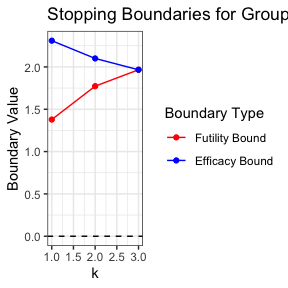

gsDesignCRT example
example.RmdIntroduction
This article outlines the procedure for calculating the maximum and expected sample sizes and then evaluating the corresponding empirical power via simulation for a parallel group sequential CRT using the gsDesignCRT package.
Calculating maximum and expected sample sizes
Suppose we were to design a group sequential CRT with a continuous outcome and total analyses where two-sided tests for early efficacy or binding futility stopping are conducted. We want to calculate the maximum number of clusters per arm needed to detect an effect size of with Type I error and power assuming the variance of outcomes in both arms is , the intracluster correlation coefficient (ICC) is , and the size of each cluster is fixed at participants (such that ). We will assume that recruitment will be conducted under Design #2 with clusters enrolled at the beginning of the trial with individual participants recruited into the clusters over time.
## Specify desired population parameters and error rates
mu_vec <- c(0, 0.2) # Mean outcome for intervention arms
sd_vec <- c(1, 1) # Standard deviations for intervention arms
delta <- abs(mu_vec[2] - mu_vec[1]) # Desired effect size; must be > 0
n <- 50 # Average cluster size
n_cv <- 0 # Coefficient of variation of cluster sizes
rho <- 0.1 # ICC
alpha <- 0.05 # Type I error
beta <- 0.1 # Type II error (1 - power)
## Specify how interim analyses are conducted
k <- 3 # total number of analyses
test_type <- 4 # efficacy or binding futility stopping
test_sides <- 2 # two-sided test
size_type <- 1 # calculate maximum number of clusters per arm m_max
timing_type <- 3 # calculate maximum sample size and expected sample size based
# on sample increments in size_timing
m_timing <- c(0, 0) # Fixed number of clusters per arm at each analysis
n_timing <- c(1, 1) # Equal increments of individual within clusters at each
# analysis
alpha_sf <- sfLDOF # Efficacy bound spending function (O'Brien-Fleming here)
beta_sf <- sfLDOF # Futility bound spending function (O'Brien-Fleming here)
## Calculate corresponding sample size
design_results <- gsDesignCRT(k = k,
outcome_type = 1, # continuous outcomes
test_type = test_type,
test_sides = test_sides,
size_type = size_type,
timing_type = timing_type,
delta = delta,
sigma_vec = sd_vec,
rho = rho,
alpha = alpha,
beta = beta,
n = n,
m_timing = m_timing,
n_timing = n_timing,
alpha_sf = alpha_sf,
beta_sf = beta_sf)
# Maximum number of clusters per arm
design_results$max_m[1]
#> [1] 66.15474
# Maximum total number of participants
design_results$max_total[1]
#> [1] 3307.737
# Expected total number of participants under null hypothesis
design_results$e_total[1, 1]
#> [1] 1296.684
# Expected total number of participants under alternative hypothesis
design_results$e_total[1, 2]
#> [1] 1375.776Stopping boundaries for the group sequential CRT design can also be visualized.
gsPlotCRT(design_results)
Evaluating empirical power via simulations
After calculating the maximum sample size, suppose we want to evaluate the empirical power of the corresponding trial. We assume that interim analyses are conducted with a Z-test where variance and ICC are re-estimated at each analysis, participants are recruited exactly according to how the analyses were originally scheduled, and stopping boundaries are re-computed using the observed information at each analysis.
set.seed(3)
## Specify simulation parameters
stat <- "Z_known" # Z-test with known variance and ICC
## Conduct simulations
reject <- c()
for (i in 1:1000) {
sim_df <- genContCRT(m = ceiling(design_results$max_m), n = n,
mu_vec = mu_vec, sigma_vec = sd_vec, rho = rho)
sim_trial <- gsSimCRT(design = design_results,
data = sim_df,
stat = stat)
reject <- c(reject, sim_trial$reject)
}
## Estimate empirical power from simulations
mean(reject)
#> [1] 0.894